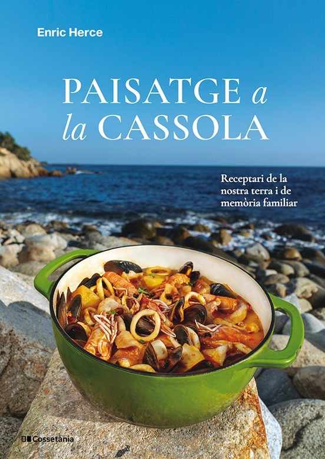
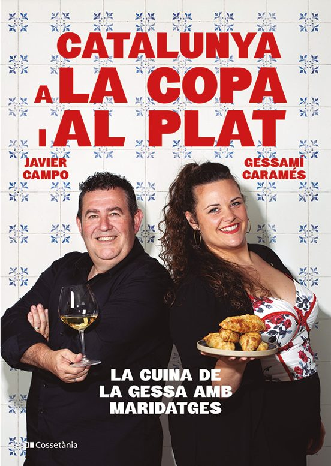
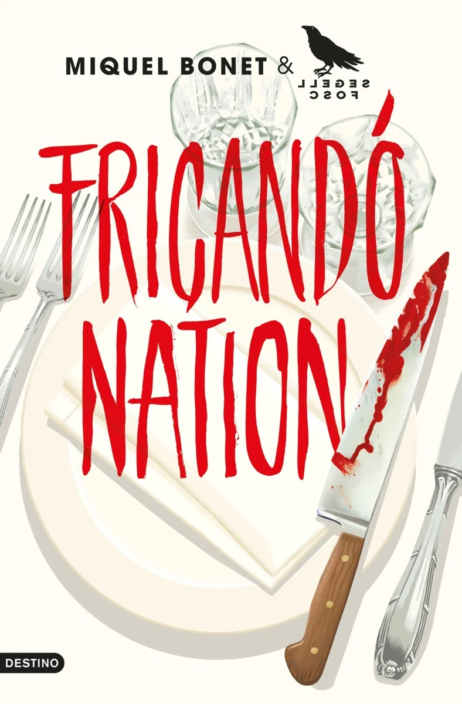
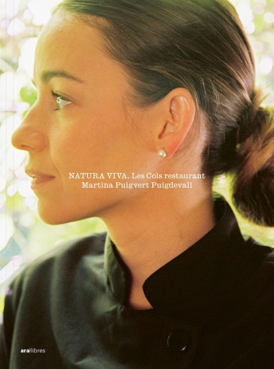
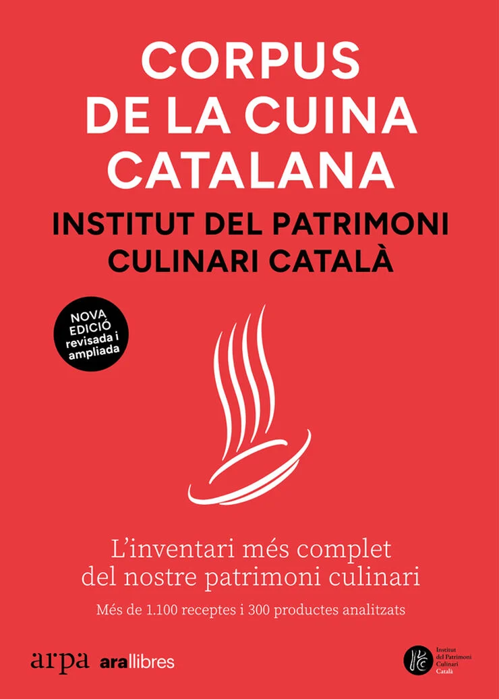
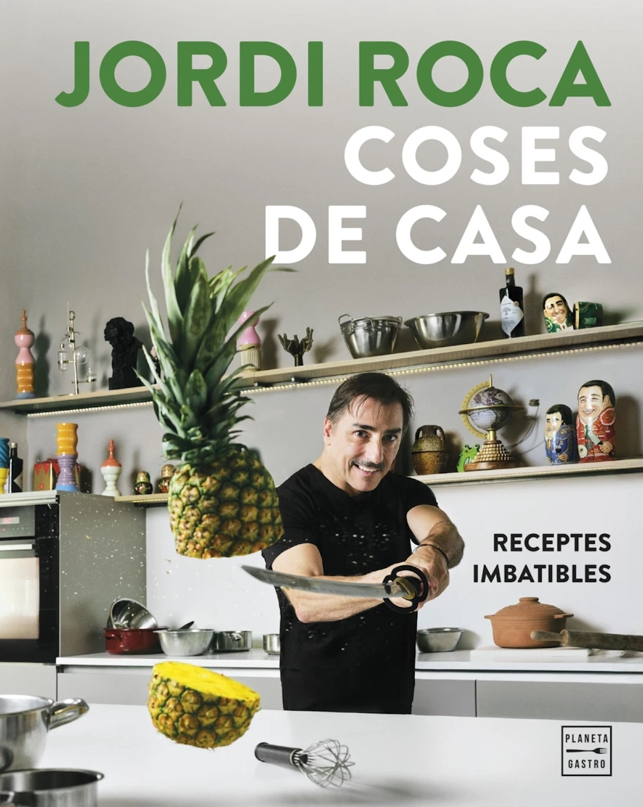
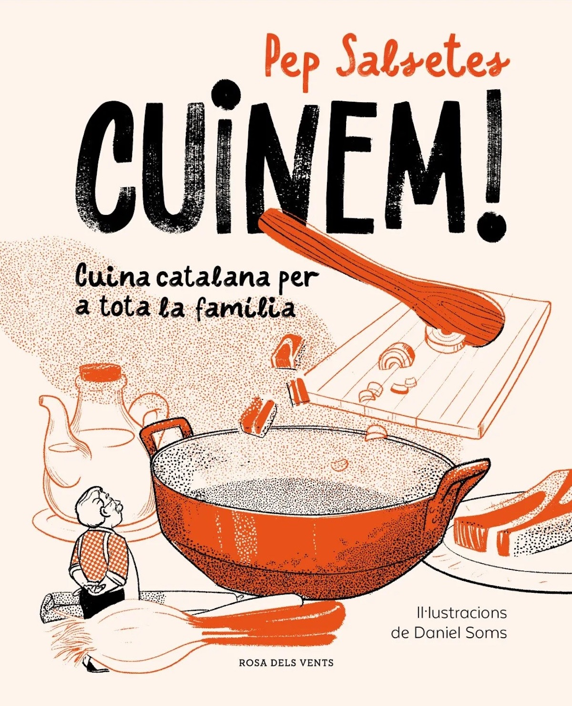

No todo son cenas, visitas y puntuaciones
Los Gourmets de Tarragona somos, antes que nada, personas que amamos la cultura gastronómica en su sentido más amplio: el producto, el territorio, el oficio y también los libros que nos ayudan a entender mejor todo eso. Cada Sant Jordi nos tomamos un momento para compartir lecturas que nos han llamado la atención, no como reseñas sino como recomendaciones de mesa: libros que nos parecen dignos de acompañar una buena rosa.

El Gran Llibre de la Calçotada
Coord. Guillermo Soler García de Oteyza · Dir. Albert París Fortuny · Amb Jaume Fàbrega, Carme Ruscalleda, Ferran Adrià i Ada Parellada
🌱 Valls · Alt Camp · Tarragona

Paisatge a la cassola
Enric Herce
Josep Pla escribió que la cocina de un país es su paisaje puesto en la olla. Enric Herce coge esta frase y construye un viaje sentimental: 50 recetas que hablan no tanto de técnica como de memoria, de lugar y de arraigo. Segundo título de Cossetània Edicions en nuestra selección, y el que quizás tiene la portada más bella de todas: una cazuela verde sobre roca, con el mar al fondo. Hay peores formas de pensar en la cocina.

Catalunya a la copa i al plat
Gessamí Caramés i Javier Campo
El tercer título de Cossetània Edicions en esta selección toca uno de los temas que más nos interesan como asociación: el maridaje entre platos catalanes y vinos del territorio. La Gessa —Gessamí Caramés— y Javier Campo proponen 50 recetas con su vino perfecto. Un libro práctico que trata el vino no como adorno sino como un ingrediente más de la mesa. La portada, con azulejos de cocina y toda la naturalidad del mundo, ya dice mucho del tono que se encontrará dentro.
🍷 Maridatge · Vins del territori
Fricandó Nation
Miquel Bonet Pinyol (Reus, 1977)
📍 Reus · Baix Camp · Tarragona

Natura Viva. Les Cols restaurant
Martina Puigvert Puigdevall (Olot, 1994) · Fotografies: Alba Yruela
Premio Mejor Chef Joven 2024, Martina Puigvert Puigdevall es la chef ejecutiva de Les Cols (2 estrellas Michelin, Olot) y aquí traduce la filosofía del restaurante a la cocina de casa: un menú para cada mes del año con producto de temporada. 368 páginas ilustradas por Alba Yruela. La portada —un retrato de perfil de gran serenidad— anticipa un libro que no quiere impresionar, sino acompañar. De los que se abren por una receta y se cierran con un pensamiento.

Corpus de la Cuina Catalana (4a edició)
Fundació Institut del Patrimoni Culinari Català
Hay libros para leer y libros para tener. Este es de los dos. La cuarta edición revisada y ampliada del recetario más completo del patrimonio culinario catalán: cerca de 1.200 recetas, 28 de nuevas, más de 100 mejoradas y unas 300 fichas de productos con valoración nutricional. No es un libro para una tarde —es una obra de referencia que crece con quien la tiene. Forma parte de esas estanterías que, con el tiempo, dicen mucho de la persona que vive en esa casa.

Coses de Casa. Receptes imbatibles
Jordi Roca · El Celler de Can Roca (3 estrelles Michelin)
El genio dulce del Celler de Can Roca baja del Olimpo y se sienta en la cocina de casa. Jordi Roca recoge aquí las recetas que ha ido compartiendo en redes sociales y que ahora quiere dejar documentadas en papel: sencillas, resolutivas, sin parafernalia. El título es honesto y la portada con la piña en el aire lo confirma: no hay distancias ni artificios. Es un libro que un cocinero de tres estrellas ha escrito para la gente normal que quiere cocinar bien sin convertirlo en un acto heroico.

Cuinem! Cuina catalana per a tota la família
Pep Salsetes · Il·lustracions: Daniel Soms
Acabamos con el más hermoso de todos en términos visuales. Pep Salsetes —referente de la cocina tradicional catalana— propone un convite: cocinar en familia, especialmente con los pequeños, como forma de transmitir la cocina catalana de una generación a la siguiente. Las ilustraciones de Daniel Soms hacen de este libro un objeto que va más allá de la receta. Es el tipo de regalo que se queda en la cocina pero acaba en manos de todos.
Un libro y una rosa. El 23 de abril no hace falta elegir — los dos caben en las mismas manos.
Gracias a Cossetània Edicions, Ara Llibres, Arpa, Destino, Planeta Gastro y Rosa dels Vents por mantener vivo el ecosistema editorial gastronómico en catalán. Y gracias a las libreras y libreros de proximidad que cada Sant Jordi convierten los carrers en el mejor escaparate del mundo.